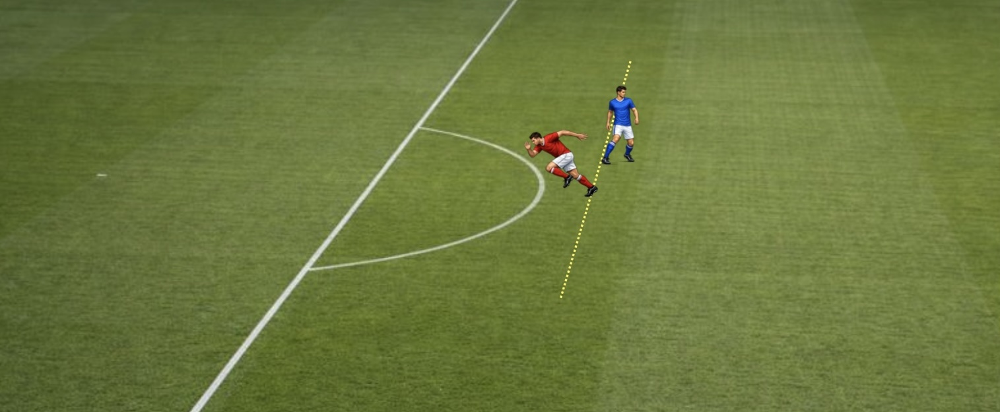

Arsene Wenger’s daylight offside plan won’t fix anything, and it could make things worse.
Arsene Wenger’s grand offside idea continues to do the rounds. Wenger has proposed that the law be changed so that there has to be ‘daylight’ between the attacker and defender for the attacker to be offside.
This will be trialled in the Canadian Premier League before deciding if it should be universally adopted. But this rule change is missing the point, and could bring drastic changes in how teams attack and defend.
The idea behind Wenger’s proposed change is that fans are frustrated by seeing goals disallowed because the forward’s toe was ahead of the defender by an inch. So why not say that the whole of the player has to be ahead of the defender for it to be offside? That will get rid of the immediate problem, in the sense that players who look “basically level” will count as onside.
But many have been quick to point out - because it is stunningly obvious - this rule change merely shifts the point of contention to whether or not the whole atttacker is ahead of the defender, and the differences will be no less minute.
In fact, the freeze frames could look even more controversial because at least most of us accept that a player who is an inch ahead of the defender is offside, under the long-understood definition of offside. But when VAR is judging whether a player’s back heel is ahead of the defender, as in the image below, it is going to look ridiculous to viewers because this position has always been miles offside.

Wenger’s daylight rule won’t solve the problem of contentious, millimetre offside decisions. What will it change? The obvious difference is that many of the decisions currently given as offside will instead be onside. So fewer offsides and more goals, right?
It’s hard to say. Clearly if defenders continue defending as they are now, then yes, and football will become a game of teams just continually lofting balls over the top for players to try and beat the offside trap. But footballers and managers aren’t stupid, so the offside line itself would probably become a thing of the past, and all teams would have to defend deep.
Maybe this would improve the game because the pitche is less congested; maybe it would make it worse because all teams pack their own box. I don’t know. But it would have a big change on a game that is incredibly popular around the world in its current form, and that seems like quite a gamble.
There is another potential flaw in the daylight rule that I haven’t seen mentioned. While most people envisage an offside decision with a forward running past a defender, as pictured above, there is also the scenario where players are close together and making physical contact.
As things stand, a defender is able to keep tabs on the forward’s position, because the onus is on the forward to stay ahead of him. But under the daylight law change, put yourself in the forward’s shoes. You can get tight to the defender and goalside of him, knowing that as long as any part of you is level, you are onside. This enables a forward to physically block off the defender for any cross or through ball.

So if you enjoy watching all the grappling from set pieces nowadays, you will be rubbing your hands together in anticipation of forwards and defenders fighting for position throughout the game. And defenders would face the usual problem: if a foul gets called against the attacker, it’s just a free kick. If it gets called against the defender, it could be a penalty or red card. Part of me is intrigued to see how the experiment goes, but it just seems like an obviously bad idea overall.
If Wenger’s idea doesn’t solve the problem, what would? When considering the laws of the game I always like to consider the spirit of each law, and what was the problem that inspired the law in the first place? Offside has been part of football since it was first codified, because without offside football becomes a mundane game of launching the ball over the top of the opposing team, rather than the more interesting task of dribbling it past them or passing it around them.
It’s being offside that is the chief offence, and as long as a law causes players to strive to stay in front of the last defender, it is doing its job. Whether a player strays a few millimetres ahead of a defender doesn’t really change that.
But of course, when the law was introduced, they couldn’t dream that we would one day be able to measure players’ positions down to the inch. While I would love to go back to the pre-VAR era when you could just cheer a goal as it goes in, free of any concerns over a potential offside check, let’s face facts. You can’t put the toothpaste back in the tube. If VAR were scrapped now, we would have a weekly parade of goals incorrectly awarded or ruled out, with the usual managers lamenting the great injustice of it all.
Those of us who were against VAR when it was first introduced were accused of being sort of football Luddites. Au contraire: I argue that we need more technology, not less.
I believe the close-calls aren’t actually what football fans have a problem with. This is a great big red herring. It is the delays in making the decisions that has everybody irritated. A goal goes in, everyone celebrates, but then the VAR review begins and often the goal is ruled out after several minutes. Celebrations thus have become muted a bit. There is the additional problem of players who look clearly offside but the linesman is compelled to keep his flag down, just in case. The poor linesmen routinely get slaughtered for this by co-commentators, but those same critics would be equally critical if the linesman puts up his flag and gets it wrong. Anyone who has stood on the side of a football pitch at ground level knows how difficult it is to judge players’ relative positions - never mind if you are being asked to run up and down at the pace of a Premier League match while doing it.
In fact we have clear evidence that fans do not mind close calls. Goal-line technology has been used for how many years now in England, and it is rarely controversial. Even when Salah example…was just seen as unlucky, no one complained it was wrong. But also cite the Villa example which kept them up.
Offsides should be instant. No reason they can’t be in 2026 - football should be pumping money into developing the tech. Obviously some decisions do require further adjudication of interfering with play etc, but we can make instant calls on so many of them.
Maybe at some point in the future, AI refs can make instant decisions on everything. But will people accept that? Humans want accuracy but have a funny psychology when it comes to technology - e.g. self-driving cars.